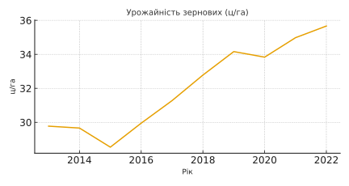
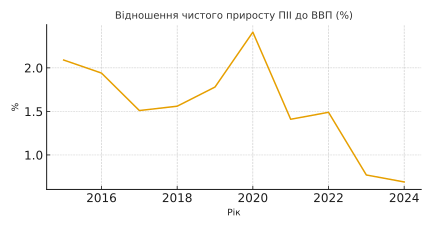
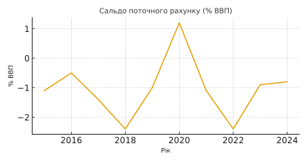
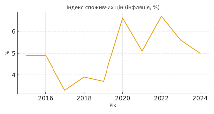
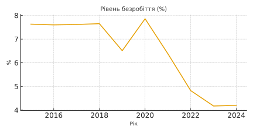

Аналіз показників економічної безпеки Індії
Урожайність зернових

Урожайність має позитивну тенденцію до зростання.
ПІІ до ВВП

Спостерігається зниження інвестиційної активності.
Сальдо поточного рахунку

Показник коливається в межах оптимального рівня.
Індекс інфляції

Інфляція залишається на підвищеному рівні.
Рівень безробіття

Рівень безробіття має тенденцію до зниження.
Загальний підсумок
Економічна безпека Індії має як сильні, так і проблемні сторони. Сільське господарство демонструє зростання. Інвестиційна активність знижується. Сальдо рахунку залишається стабільним. Інфляція створює ризики. Безробіття поступово зменшується. Загалом країна має потенціал для зміцнення економічної безпеки.